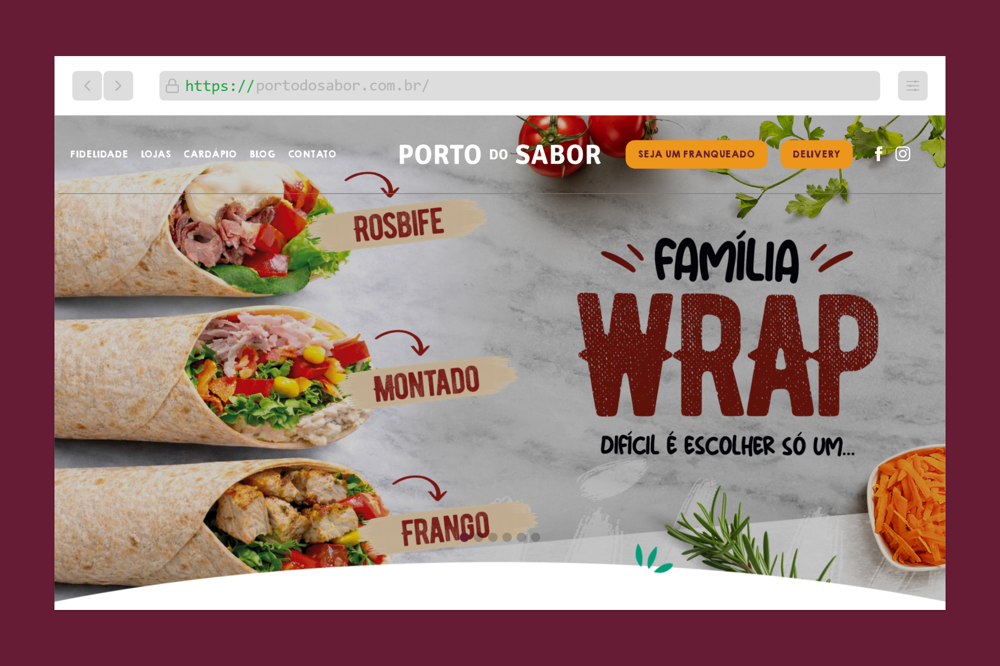
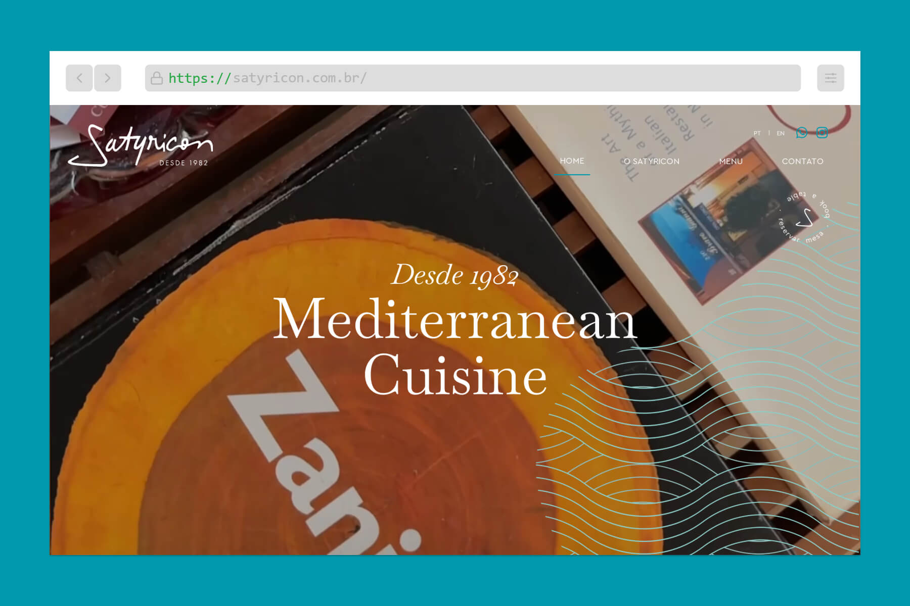
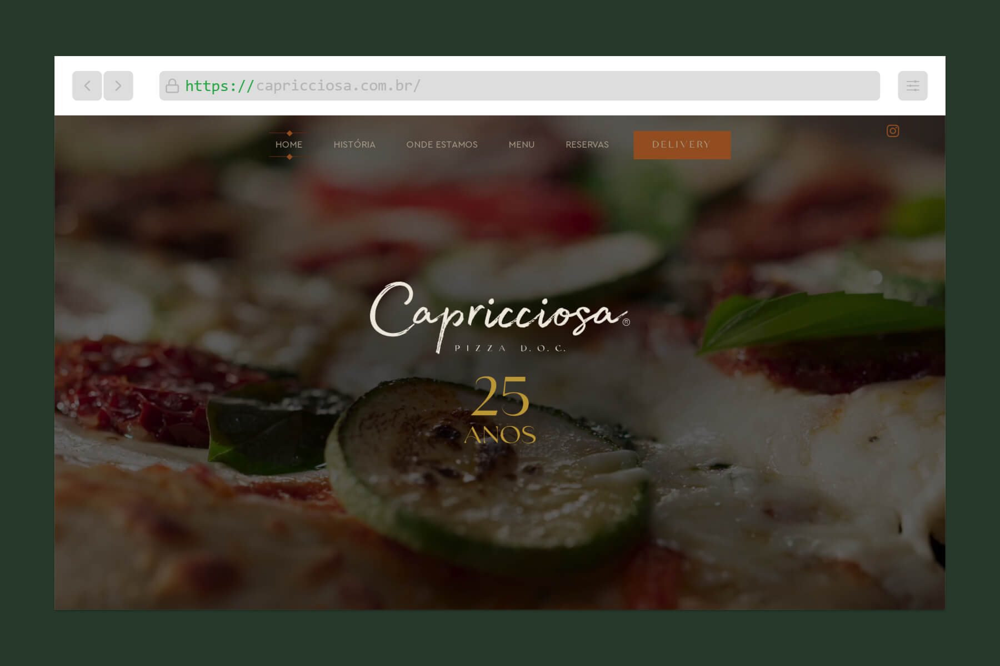
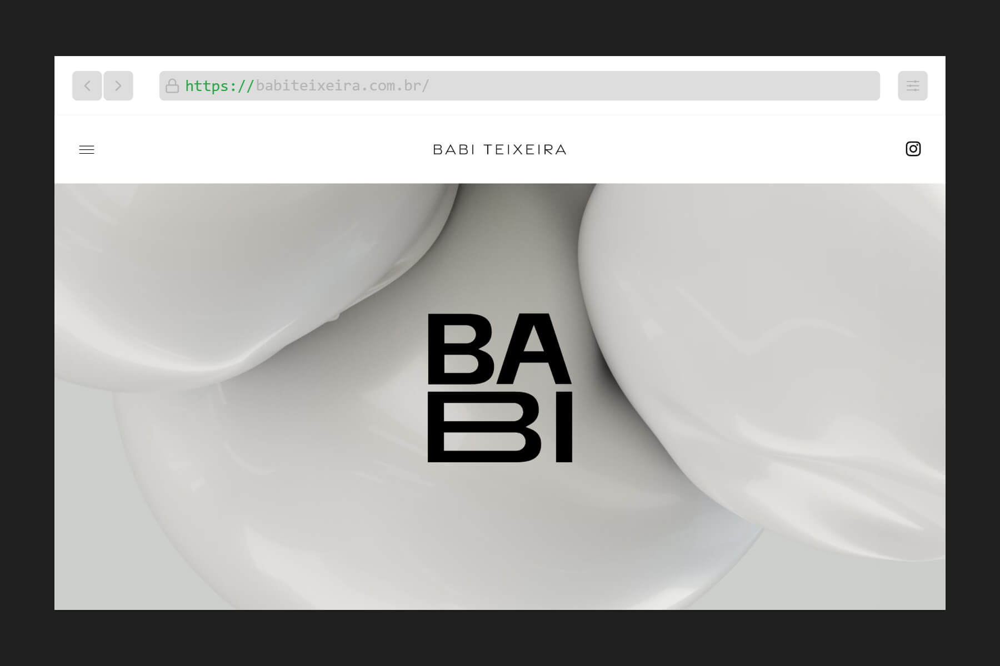
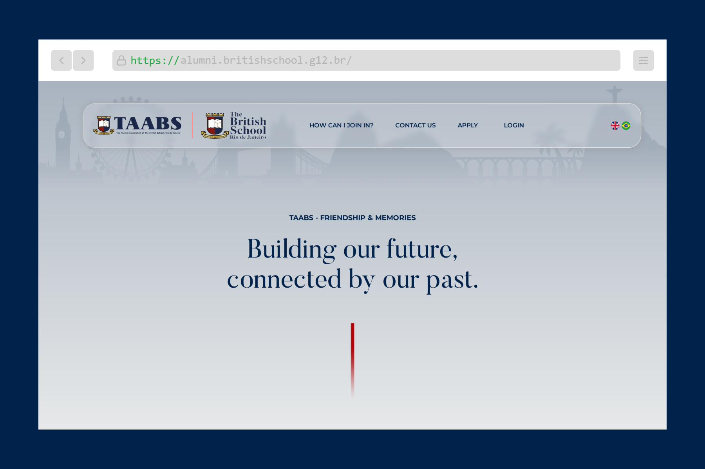
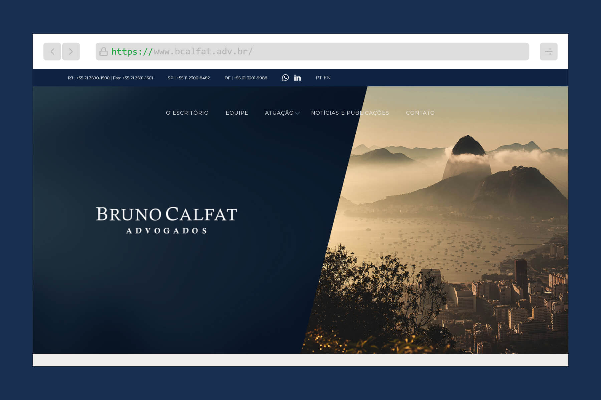
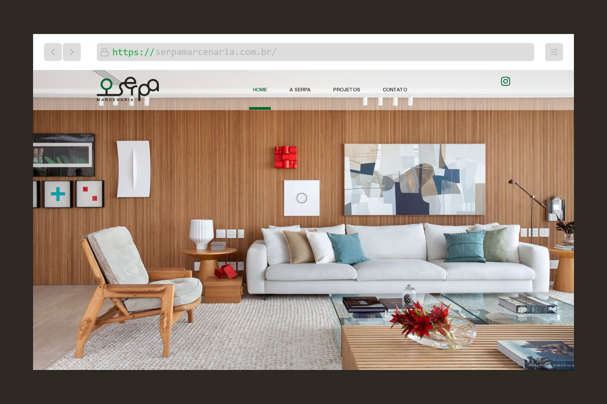
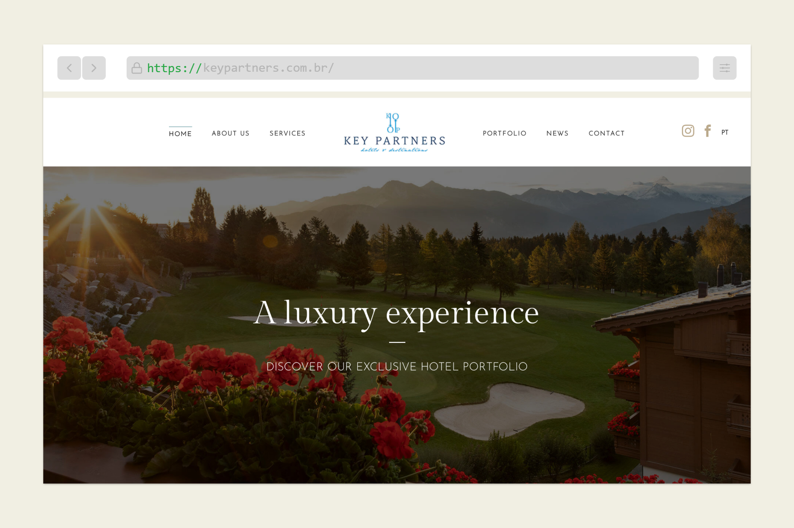

Porto do Sabor
Site desenvolvido com foco em destacar campanhas, produtos e a identidade da marca, criando uma experiência visual leve, intuitiva e adaptada para diferentes dispositivos.
https://portodosabor.com.br/Crio sites modernos e experiências digitais intuitivas, transformando ideias em interfaces funcionais com atenção aos detalhes, desempenho e usabilidade.
Atuo no desenvolvimento de projetos institucionais, landing pages e experiências digitais, sempre buscando unir design, performance e atenção aos detalhes.

Site desenvolvido com foco em destacar campanhas, produtos e a identidade da marca, criando uma experiência visual leve, intuitiva e adaptada para diferentes dispositivos.
https://portodosabor.com.br/
Projeto desenvolvido para transmitir a sofisticação e a experiência gastronômica da marca, valorizando a apresentação visual, a navegação fluida e a identidade do restaurante.
https://satyricon.com.br/
Interface criada para reforçar a presença digital da marca, unindo sofisticação, identidade visual e uma experiência alinhada ao universo gastronômico italiano.
https://capricciosa.com.br/
Projeto desenvolvido para apresentar o trabalho e a essência da arquiteta através de uma experiência elegante, minimalista e com foco na valorização dos ambientes e detalhes visuais.
https://babiteixeira.com.br/
Plataforma desenvolvida para fortalecer a conexão entre ex-alunos, criando uma experiência intuitiva e organizada para interação, networking e compartilhamento de histórias.
https://alumni.britishschool.g12.br/
Site institucional criado para transmitir credibilidade e profissionalismo, organizando conteúdos e áreas de atuação em uma experiência clara, moderna e objetiva.
https://www.bcalfat.adv.br/
Projeto desenvolvido para destacar a tradição e excelência da marca, valorizando projetos personalizados através de uma experiência visual elegante e focada nos detalhes.
https://serpamarcenaria.com.br/
Projeto desenvolvido para apresentar experiências e destinos de alto padrão através de uma interface sofisticada, valorizando a identidade da marca e a experiência visual.
https://keypartners.com.br/Phasellus convallis elit id ullamcorper pulvinar. Duis aliquam turpis mauris, eu ultricies erat malesuada quis. Aliquam dapibus, lacus eget hendrerit bibendum, urna est aliquam sem, sit amet imperdiet est velit quis lorem.
Phasellus convallis elit id ullam corper amet et pulvinar. Duis aliquam turpis mauris, sed ultricies erat dapibus.
Phasellus convallis elit id ullam corper amet et pulvinar. Duis aliquam turpis mauris, sed ultricies erat dapibus.
Phasellus convallis elit id ullam corper amet et pulvinar. Duis aliquam turpis mauris, sed ultricies erat dapibus.
Phasellus convallis elit id ullam corper amet et pulvinar. Duis aliquam turpis mauris, sed ultricies erat dapibus.
Phasellus convallis elit id ullam corper amet et pulvinar. Duis aliquam turpis mauris, sed ultricies erat dapibus.
Phasellus convallis elit id ullam corper amet et pulvinar. Duis aliquam turpis mauris, sed ultricies erat dapibus.
Desenvolvendo interfaces modernas, responsivas e com foco em experiência.
Se você tem um projeto em mente, vamos conversar.